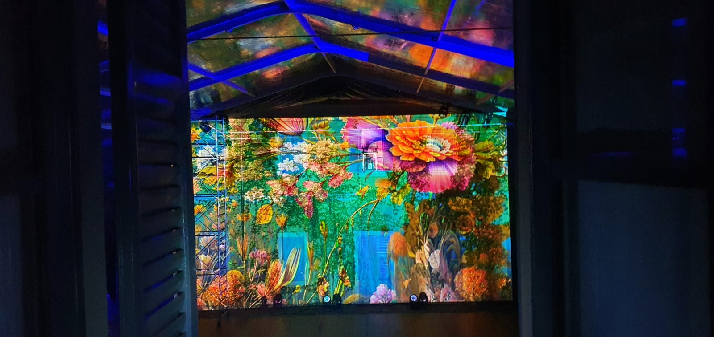
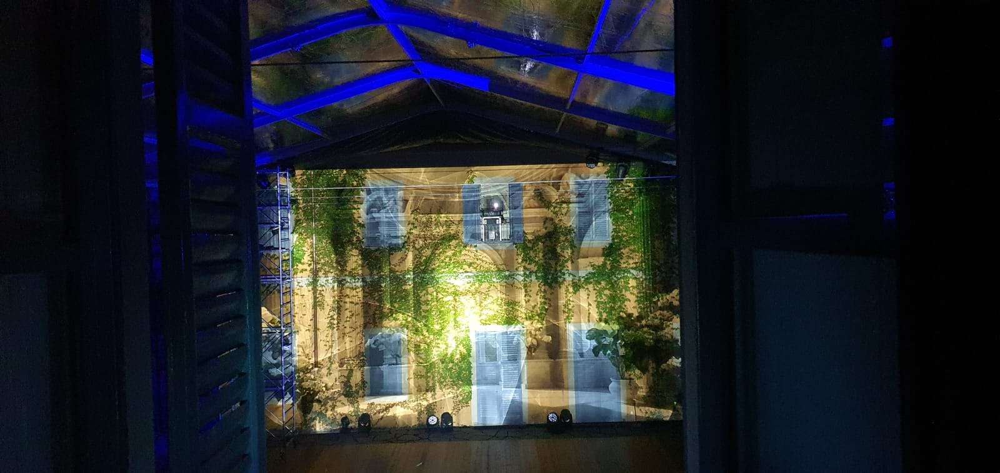
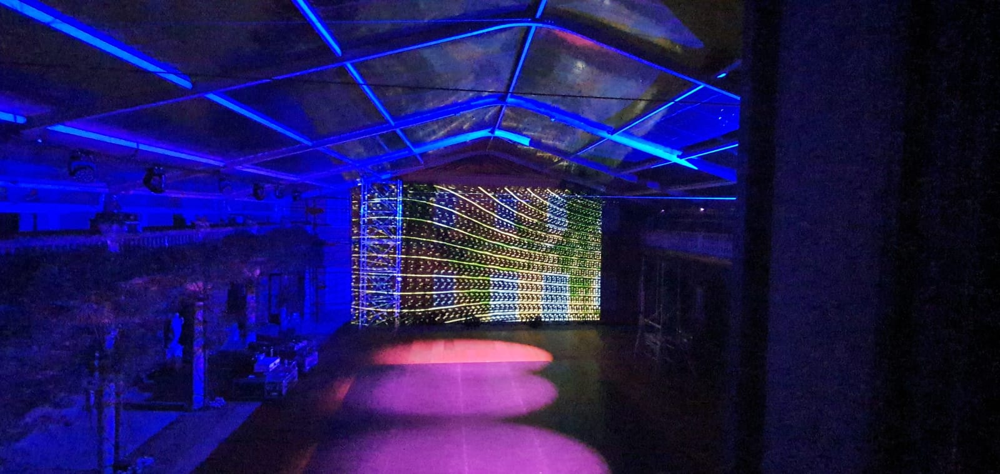

On the shores of Lake Como, in the heart of history and refinement, Villa Gastel became the stage for a dreamlike Sangeet — an enchanting experience where art met technology, and tradition blended seamlessly with innovation. Under the artistic direction and staging of Cristian Taraborrelli, every detail was transformed into an unforgettable story.
Together with the production expertise of Samit Garg / E-Factor Experiences, every element — from Angela Buscemi’s exquisite costumes to Vincenzo Dascanio’s meticulous floral creations and the immersive projections — told a tale of emotion, beauty, and innovation.
Sulle rive del Lago di Como, nel cuore della storia e della raffinatezza, Villa Gastel è diventata il palcoscenico di un Sangeet da sogno — un’esperienza incantevole dove l’arte ha incontrato la tecnologia, e la tradizione si è fusa senza soluzione di continuità con l’innovazione. Sotto la direzione artistica e la messa in scena di Cristian Taraborrelli, ogni dettaglio è stato trasformato in una storia indimenticabile.
Insieme alla competenza produttiva di Samit Garg / E-Factor Experiences, ogni elemento — dagli squisiti costumi di Angela Buscemi alle meticolose creazioni floreali di Vincenzo Dascanio e le proiezioni immersive — ha raccontato una storia di emozione, bellezza e innovazione.
Sur les rives du Lac de Côme, au cœur de l’histoire et du raffinement, la Villa Gastel est devenue la scène d’un Sangeet de rêve — une expérience enchantante où l’art a rencontré la technologie, et la tradition s’est fondue harmonieusement avec l’innovation. Sous la direction artistique et la mise en scène de Cristian Taraborrelli, chaque détail a été transformé en une histoire inoubliable.
Avec l’expertise de production de Samit Garg / E-Factor Experiences, chaque élément — des costumes exquis d’Angela Buscemi aux créations florales minutieuses de Vincenzo Dascanio et aux projections immersives — a raconté une histoire d’émotion, de beauté et d’innovation.
A Legendary Venue
Villa Gastel is more than just a residence; it is a cradle of inspiration. This historic gem, once a Benedictine convent from the 12th century and later the residence of the Visconti di Modrone family, has witnessed the genius of Federico Fellini and the vision of countless artists and intellectuals. For one night, the villa transformed into an open-air theatre, where every element — from scenography to performance — contributed to a narrative of pure wonder.
Villa Gastel è molto più di una semplice residenza; è una culla di ispirazione. Questo gioiello storico, un tempo convento benedettino del XII secolo e poi dimora della famiglia Visconti di Modrone, ha ospitato il genio di Federico Fellini e la visione di innumerevoli artisti e intellettuali. Per una notte, la villa si è trasformata in un teatro a cielo aperto, dove ogni elemento — dalla scenografia alla performance — ha contribuito a un racconto di puro incanto.
La Villa Gastel est bien plus qu’une simple résidence ; c’est un berceau d’inspiration. Ce joyau historique, autrefois couvent bénédictin du XIIe siècle puis résidence de la famille Visconti di Modrone, a été témoin du génie de Federico Fellini et de la vision d’innombrables artistes et intellectuels. Le temps d’une nuit, la villa s’est transformée en théâtre à ciel ouvert, où chaque élément — de la scénographie à la performance — a contribué à un récit de pur émerveillement.
Art, Performance & Innovation
The Sangeet went beyond mere entertainment, becoming a full-fledged artistic celebration. Guests were welcomed by a symphony of light and sound: the immersive projections by Fabio Massimo Iaquone turned the historic walls into vibrant canvases, while the dancers, with choreography designed by Thomas Signorelli, moved in perfect harmony with videomapping, which embraced every motion.
Among the performances, Stefania Ventura mesmerized the audience with extraordinary acrobatics using the Cyr wheel and Lollipop, demonstrating a unique mastery of these techniques. Her fluid and spectacular movements added another layer of magic to the evening.
Enhancing the night’s enchantment, soprano Serena Gamberoni, with her powerful and refined timbre, captivated the audience, accompanied by the violin of Stella Manfredi. Her voice filled the villa’s spaces with rare emotion, creating an intimate and timeless atmosphere.
Il Sangeet è andato oltre il semplice intrattenimento, diventando una vera e propria celebrazione artistica. Gli ospiti sono stati accolti da una sinfonia di luci e suoni: le proiezioni immersive di Fabio Massimo Iaquone hanno trasformato le pareti storiche in tele vibranti, mentre i danzatori, con la coreografia di Thomas Signorelli, si muovevano in perfetta armonia con il videomapping, che avvolgeva ogni movimento.
Tra le performance, Stefania Ventura ha ipnotizzato il pubblico con straordinarie acrobazie alla Cyr wheel e al Lollipop, dimostrando una padronanza unica di queste tecniche. I suoi movimenti fluidi e spettacolari hanno aggiunto un ulteriore livello di magia alla serata.
Ad amplificare l’incanto della serata, il soprano Serena Gamberoni, con il suo timbro potente e raffinato, ha incantato il pubblico, accompagnata dal violino di Stella Manfredi. La sua voce ha riempito gli spazi della villa di un’emozione rara, creando un’atmosfera intima e senza tempo.
Le Sangeet est allé au-delà du simple divertissement, devenant une véritable célébration artistique. Les invités ont été accueillis par une symphonie de lumière et de son : les projections immersives de Fabio Massimo Iaquone ont transformé les murs historiques en toiles vibrantes, tandis que les danseurs, avec la chorégraphie de Thomas Signorelli, évoluaient en parfaite harmonie avec le vidéomapping, qui accompagnait chaque mouvement.
Parmi les performances, Stefania Ventura a fasciné le public avec des acrobaties extraordinaires à la Cyr wheel et au Lollipop, démontrant une maîtrise unique de ces techniques. Ses mouvements fluides et spectaculaires ont ajouté une couche supplémentaire de magie à la soirée.
Amplifiant l’enchantement de la nuit, la soprano Serena Gamberoni, avec son timbre puissant et raffiné, a captivé le public, accompagnée du violon de Stella Manfredi. Sa voix a empli les espaces de la villa d’une émotion rare, créant une atmosphère intime et intemporelle.
Costumes · Angela Buscemi
Costume designer Angela Buscemi transformed each performer into a tableau vivant, with 1920s-inspired garments characterized by artisanal craftsmanship and unique details. The fine fabrics and intricate embroidery made the costumes silent protagonists of the evening, perfectly in tune with the scenography and event concept.
La costumista Angela Buscemi ha trasformato ogni performer in un tableau vivant, con abiti ispirati agli anni Venti caratterizzati da lavorazione artigianale e dettagli unici. I tessuti pregiati e i ricami intricati hanno reso i costumi protagonisti silenziosi della serata, perfettamente in sintonia con la scenografia e il concept dell’evento.
La costumière Angela Buscemi a transformé chaque artiste en un tableau vivant, avec des vêtements inspirés des années 1920, caractérisés par un savoir-faire artisanal et des détails uniques. Les tissus fins et les broderies complexes ont fait des costumes les protagonistes silencieux de la soirée, parfaitement en harmonie avec la scénographie et le concept de l’événement.
The Grand Entrance
The highlight of the evening was the spectacular entrance of the bride and groom. Enveloped in a golden rain of confetti and illuminated by the lighting design of Massimo Tomasino and a majestic laser mapping, they arrived on the floral bridge — a masterpiece created by Vincenzo Dascanio. The six-metre-high flames that soared into the sky framed a moment that will forever remain etched in the memories of all attendees.
Il momento più emozionante della serata è stato lo spettacolare ingresso degli sposi. Avvolti in una pioggia dorata di coriandoli e illuminati dal lighting design di Massimo Tomasino e da un maestoso laser mapping, sono arrivati sul ponte floreale — un capolavoro creato da Vincenzo Dascanio. Le fiamme alte sei metri che si innalzavano verso il cielo hanno incorniciato un momento che resterà per sempre impresso nella memoria di tutti i presenti.
Le moment fort de la soirée a été l’entrée spectaculaire des mariés. Enveloppés dans une pluie dorée de confettis et illuminés par le design lumière de Massimo Tomasino et un majestueux laser mapping, ils sont arrivés sur le pont floral — un chef-d’œuvre créé par Vincenzo Dascanio. Les flammes de six mètres de haut qui s’élançaient vers le ciel ont encadré un moment qui restera à jamais gravé dans la mémoire de tous les invités.
Creative Team
Artists
Soprano
Serena Gamberoni
Violinist
Stella Manfredi
Acrobat · Cyr Wheel & Lollipop
Stefania Ventura
Gallery




Video
Tags